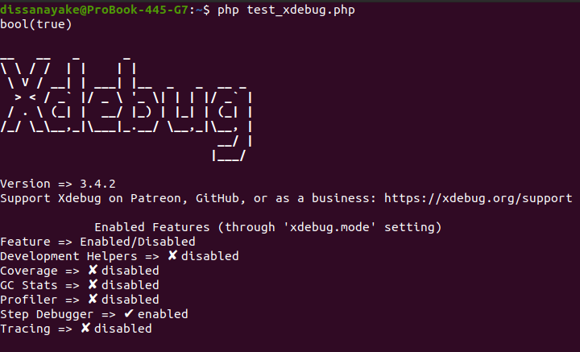

Setup xdebug in ubuntu with VS-Code
Identify Your PHP Versions
ls /etc/php/
# Check version
php -v
which php
If you need to switch between PHP versions, Make sure to install and configure Xdebug for each version you plan to use.
Install Xdebug for Your PHP Version
sudo apt update
sudo apt install php8.2-xdebug
Configure Xdebug
sudo nano /etc/php/8.2/mods-available/xdebug.ini
add these lines
zend_extension=xdebug.so
xdebug.mode=debug
xdebug.start_with_request=yes
xdebug.client_host=127.0.0.1
xdebug.client_port=9003
xdebug.log=/tmp/xdebug.log
xdebug.idekey=VSCODE
Verify Xdebug Installation
php -m | grep xdebug
php -r "phpinfo();" | grep xdebug
Test Xdebug
php -m | grep -i xdebug
Test Xdebug Functionality
echo '<?php var_dump(extension_loaded("xdebug")); xdebug_info(); ?>' > test_xdebug.php
php test_xdebug.php
- You should see bool(true) and Xdebug configuration information without any "already loaded" warnings.

Troubleshooting
tail -f /tmp/xdebug.log
Check if there are conflicting xdebug entries
grep -r "xdebug" /etc/php/
Restart server
# for apache2
sudo systemctl restart apache2
# for Nginx
sudo systemctl restart nginx
- If everything is set up correctly, Xdebug should be working by now.
Laravel-Specific Xdebug Configuration
Update Xdebug Configuration for Web Debugging
sudo nano /etc/php/8.2/mods-available/xdebug.ini
#add these lines
zend_extension=xdebug
xdebug.mode=debug,develop
xdebug.start_with_request=yes
xdebug.client_host=127.0.0.1
xdebug.client_port=9003
xdebug.log=/tmp/xdebug.log
xdebug.idekey=VSCODE
xdebug.max_nesting_level=512
xdebug.var_display_max_depth=10
xdebug.var_display_max_children=256
xdebug.var_display_max_data=1024
#restart apache server
sudo systemctl restart apache2
VS Code Configuration for Laravel
- install xdebug vs-code extension/s
-
Create
.vscode/launch.jsonin your Laravel root directory, -
NOTE: pathMappings in
.vscode/launch.json - After setting up just click (FN+F5)
for PHP artisan serve
{
"version": "0.2.0",
"configurations": [
{
"name": "Listen for Xdebug (Laravel Serve)",
"type": "php",
"request": "launch",
"port": 9003,
"pathMappings": {
"/path/to/application": "${workspaceFolder}"
},
"ignore": [
"**/vendor/**/*.php"
]
},
{
"name": "Debug Laravel Serve with Xdebug",
"type": "php",
"request": "launch",
"program": "${workspaceFolder}/artisan",
"args": ["serve", "--host=127.0.0.1", "--port=8000"],
"cwd": "${workspaceFolder}",
"runtimeArgs": [
"-dxdebug.mode=debug",
"-dxdebug.client_host=127.0.0.1",
"-dxdebug.client_port=9003",
"-dxdebug.start_with_request=yes"
],
"env": {
"XDEBUG_CONFIG": "idekey=VSCODE"
},
"ignore": [
"**/vendor/**/*.php"
]
}
]
}
Enable Xdebug for CLI and Web
#Enable for CLI (for artisan commands):
sudo phpenmod -s cli xdebug
#Enable for Apache/Nginx:
sudo phpenmod -s apache2 xdebug
# or for nginx with php-fpm
sudo phpenmod -s fpm xdebug
Restart Services
# For Apache:
sudo systemctl restart apache2
# For Nginx with PHP-FPM:
sudo systemctl restart php8.1-fpm
sudo systemctl restart nginx